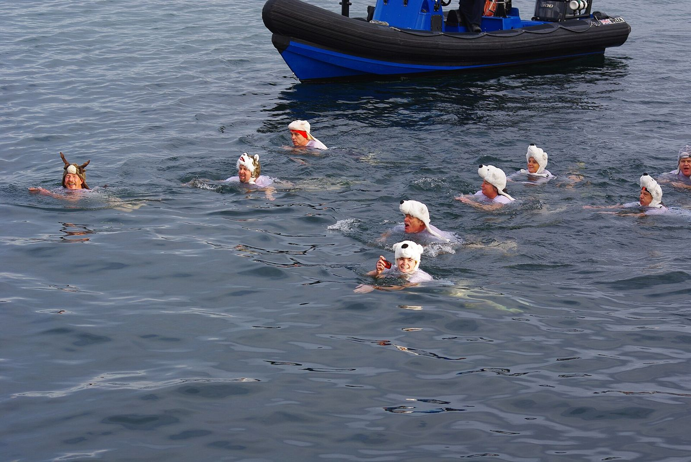

Kurz gesagt
Für ein Winterbad passt das Wesentliche in eine Tasche: ein Badeanzug oder eine Badehose, eine Mütze, Schuhe und eventuell Neopren-Handschuhe (Füsse und Hände kühlen schnell aus), eine Schwimmboje, um gesehen zu werden und sich auszuruhen, und für den Ausstieg ein Handtuch, ein Cape oder ein warmer Bademantel, leicht anzuziehende Kleidung, eine Unterlage zum Umziehen und ein warmes Getränk. Und vor allem eine Begleitung.
Was trägt man im kalten Wasser?
- Einen bequemen Badeanzug oder eine Badehose, oder einen Anzug, wenn man länger schwimmen will.
- Eine Mütze aus Silikon oder Neopren: Die Schweizerische Lebensrettungs-Gesellschaft empfiehlt, eine Mütze zu tragen und den Kopf über Wasser zu halten.
- Neopren-Schuhe: Die Füsse leiden schnell unter der Kälte, und die Kiesel des Genfersees verzeihen nichts.
- Neopren-Handschuhe, wenn die Hände taub werden; je dicker, desto besser der Schutz, aber desto weniger Geschick in den Fingern. Die Outdoor Swimming Society nennt sie zusammen mit den Schuhen unter den nützlichen Winterzubehörteilen.
- Eine farbige Schwimmboje: Die Beratungsstelle für Unfallverhütung (BFU) empfiehlt sie im Freiwasser, um gesehen zu werden und sich bei Bedarf festhalten zu können.
Was braucht man für den Ausstieg?
- Ein grosses Handtuch und ein Cape oder einen warmen Bademantel, um sich windgeschützt umzuziehen.
- Weite, leicht anzuziehende Kleidung für kalte Finger: mehrere Schichten, keine komplizierten Knöpfe, Mütze und warme Socken.
- Eine Unterlage zum Umziehen, um nicht mit den Füssen auf Steine oder gefrorenes Gras zu treten.
- Eine Thermosflasche mit einem warmen Getränk: Die SLRG rät zu einem lauwarmen Getränk, um sich von innen aufzuwärmen. Kein Alkohol.
Welche Ausrüstung ist die wichtigste?
Eine Begleitung. SLRG und BFU sind eindeutig: Man schwimmt nie allein im Freiwasser, erst recht nicht im kalten Wasser. Der Rest der Ausrüstung macht das Bad angenehmer; die Anwesenheit von jemandem macht es sicherer.
Wo kann man diese Ausrüstung in der Nähe des Genfersees kaufen oder mieten?
Die Sport- und Surfgeschäfte der Region bieten Mützen, Schuhe und Handschuhe aus Neopren an. Zum Aufwärmen vor Ort haben manche Orte eine Sauna, etwa die Bains des Rives in Bellerive (Lausanne) im Winter: siehe den Leitfaden zum Winterbaden.
Vor dem Aufbruch: die ersten 90 Sekunden im kalten Wasser. Beim Ausstieg: sich gut aufwärmen. Das Wasser von heute steht in der App.
Das Wasser des Sees im Moment
Die Wassertemperatur jedes Badeplatzes steht in der App Mein See, alle drei Stunden aktualisiert.
Hinweis. Dieser Artikel gibt allgemeine Informationen aus den genannten Quellen wieder; er ersetzt keinen ärztlichen Rat. Baden in kaltem Wasser belastet das Herz stark und kann gefährlich sein: Lass dich vor dem Beginn von einer Ärztin oder einem Arzt beraten, besonders bei Herzproblemen, Bluthochdruck oder Schwangerschaft. Geh nie allein ins Wasser und befolge die Anweisungen der Rettungsschwimmer. Du badest auf eigene Verantwortung; im Notfall wähle in der Schweiz die 144 oder die 112.